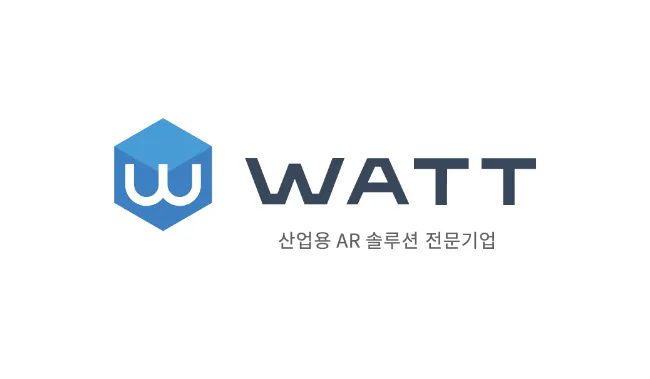

최상님 Sangnim Choi
유지보수와 확장을 고려하여 시스템을 구조화하고, 주도적으로 문제를 해결합니다. 요구사항 분석부터 배포까지 엔드투엔드로 서비스를 구축한 경험이 있으며, 레거시 시스템의 아키텍처 개선과 성능 최적화에 강점이 있습니다. 프론트엔드 친화적인 API 설계와 데이터 무결성 확보를 통해 안정적인 서비스를 제공합니다.
🎯 핵심 역량
- ✔ 요구 분석부터 DB 설계, API 구현, 배포까지 E2E 전 주기를 완수한 경험
- ✔ 3계층 아키텍처 전환과 API 응답 표준화로 레거시 시스템을 현대화한 역량
- ✔ 조건부 UPDATE 동시성 제어와 안전 바인딩으로 데이터 무결성을 확보한 경험
- ✔ JWT 인증(RBAC) 도입 및 프론트 UI 제어에 맞춘 API 설계 역량
- ✔ APM 트러블슈팅과 SQL 병목 쿼리 분석을 통해 서비스 안정성을 확보한 경험
🛠 기술 스택 분석
이 섹션은 제가 5년간 실무에서 다뤄온 기술들을 도메인별로 분류하여 보여줍니다. 좌측의 차트는 프로젝트에서 각 기술 영역이 차지했던 비중을 시각화하여, 백엔드 중심의 풀스택 개발 역량을 직관적으로 파악할 수 있도록 돕습니다.
프로젝트 수행 기반 기술 영역별 비중 시각화 (추정치)
Backend Core
Database & ORM
Frontend / View
DevOps & Tools
🏢 프로젝트 경험
이 섹션에서는 제가 수행한 주요 프로젝트들을 회사별로 나누어 상세히 탐색할 수 있습니다. 각 회사의 탭을 클릭하여 해당 기간 동안 구축하고 고도화한 개별 서비스들의 목표, 발생했던 문제, 그리고 이를 프로그래밍적으로 어떻게 해결하여 성과를 이뤄냈는지 확인해 보세요.

(주)와트
2022.10 ~ 2024.10 · 백엔드 개발자
와트매니저2 신규 백엔드 전체 개발
단독 설계/구현🧰 Java · eGovFramework/Spring · MyBatis · MSSQL · REST API
🎯 목표 및 문제
- 관리자 통합 플랫폼을 제로베이스로 구축하고 확장성 확보
- 기존 Controller-DB 직결로 인한 확장성/테스트 용이성 저하 해결
- 도메인 간 일관성 부족 및 다중 필터/안전한 정렬 구현 필요
💡 해결 및 성과
- 3계층 재설계: Controller-Service-Mapper 분리 및 공통 유틸 모듈화
- 표준화: Response 래퍼(SUCCESS/FAIL) 및 공통 페이지네이션 유틸 도입
- 안전성: MyBatis 안전 바인딩 전면 적용, 정렬 화이트리스트로 SQL 인젝션 차단
- 구조화: 체크리스트 무한 계층 모델링, 작업허가서 트리 JSON 응답 정비
출입 신청 시스템 신규 백엔드 개발
단독 설계/구현🧰 Java · eGovFramework/Spring · MyBatis · MSSQL
🎯 목표 및 문제
- 본인인증 후 신청/조회 안정화 및 상태 일원화
- 사용자 포털과 관리자 콘솔 간 명확한 역할/권한 경계 필요
- 허용된 단계의 상태 전환 규칙 검증 및 안전교육 이수 판정 요구
💡 해결 및 성과
- JWT 권한 제어(RBAC): 토큰에 Role 포함, 클라이언트 UI 동적 제어 규격 제공
- 엔드포인트 분리: 사용자(신청/조회)와 관리자(검토/승인) API 분리 및 교차 차단
- 규칙 일원화: 허용된 상태 전환만 수행하도록 검증 로직 구현
- 운영 혼선 감소 및 승인 처리 효율 향상
직캠 관리 앱 신규 백엔드 개발
단독 설계/구현🧰 Java · eGovFramework/Spring · MyBatis · MSSQL
🎯 목표 및 문제
- 직캠 장비 대여/현장 보고/반납 일관 서비스화
- 다수 사용자의 동시 대여 요청 시 발생하는 중복 대여 데이터 무결성 위험
💡 해결 및 성과
- 동시성 제어: 상태 조건을 포함한 조건부 UPDATE 기법 도입
- UPDATE 실행 후 영향 행 수(Row Count) 1건 확인으로 동일 시점 1건 대여 보장
- 현장 중복 대여 제로(0) 달성 및 데이터 무결성 완벽 확보
💡 핵심 문제 해결 스토리
이 섹션은 제가 마주했던 가장 도전적인 기술적 이슈들과, 이를 해결해 나간 사고 과정 및 구체적인 Action을 아코디언 형태로 묶어 제공합니다. 질문을 클릭하여 문제의 원인을 파악하고, 아키텍처 개선, 동시성 제어, 성능 프로파일링 등 개발자로서 깊이 있게 고민한 해결 방안을 확인해 보시기 바랍니다.
초기 프로젝트에서는 Controller 내에서 비즈니스 로직과 Statement 방식의 데이터베이스 연동을 모두 직접 처리하고 있었습니다. 이로 인해 코드가 비대해져 유지보수가 어렵고, SQL 인젝션 보안 취약점의 우려가 있었습니다.
이를 해결하기 위해 Controller - Service - Mapper의 명확한 3계층 아키텍처로 전면 전환하는 단독 프로젝트를 기획 및 수행했습니다. 전 구간에 REST API 규약을 정립하였고, MyBatis #{} 바인딩을 적용하여 동적 바인딩의 안전성을 확보했습니다.
결과적으로 비즈니스 로직과 데이터 접근 로직이 분리되어 코드 중복이 크게 감소하였고, 예기치 못한 사이드 이펙트 발생을 차단하여 운영팀으로부터 유지보수성이 혁신적으로 개선되었다는 평가를 받았습니다.
다수의 사용자가 거의 동시에 동일한 직캠 장비의 대여 버튼을 누를 경우, 단순 SELECT 후 UPDATE를 진행하는 로직에서는 그 찰나의 틈에 중복 대여 처리가 발생하여 데이터 무결성이 깨지는 심각한 이슈가 발견되었습니다.
복잡한 락(Lock) 메커니즘을 도입하기 전, 데이터베이스의 기본 특성을 활용한 조건부 UPDATE 로직으로 구조를 단순화했습니다. UPDATE 테이블 SET 상태='대여중' WHERE 장비ID = ? AND 상태='대여가능' 형태로 쿼리를 개선하고, 실행 후 영향을 받은 Row Count가 정확히 1건일 때만 성공 트랜잭션으로 처리되도록 로직을 수정했습니다.
이를 통해 동일 시점에 수십 건의 요청이 몰려도 오직 1건만 성공하고 나머지는 정해진 예외 응답(FAIL 규격화)을 내리게 되어 현장에서의 중복 대여 사고를 영구적으로 근절했습니다.
한살림 ERP 및 결제 시스템 등 복잡한 비즈니스 로직이 얽힌 환경에서는 운영 중 간헐적인 오류나 예외 상황이 발생하곤 했습니다. 이때 문제의 원인을 감으로 찾기보다는 JENNIFER APM을 적극 활용하여 접근했습니다.
장애나 지연이 발생하면 실시간 트랜잭션을 모니터링하고, 에러가 발생한 정확한 지점과 스택 트레이스를 연동된 SQL 쿼리와 함께 분석했습니다. 확인된 원인을 바탕으로 유관 부서에 신속하게 상황을 리포팅하거나, 직접 수정이 필요한 비즈니스 로직 결함인 경우 즉각적인 코드 패치 및 SQL 수정을 진행했습니다.
이를 통해 장애 발생 시 원인 파악에 소요되는 리드타임을 최소화하고, 감에 의존하지 않는 정확한 트러블슈팅으로 서비스의 안정성을 체계적으로 유지할 수 있었습니다.